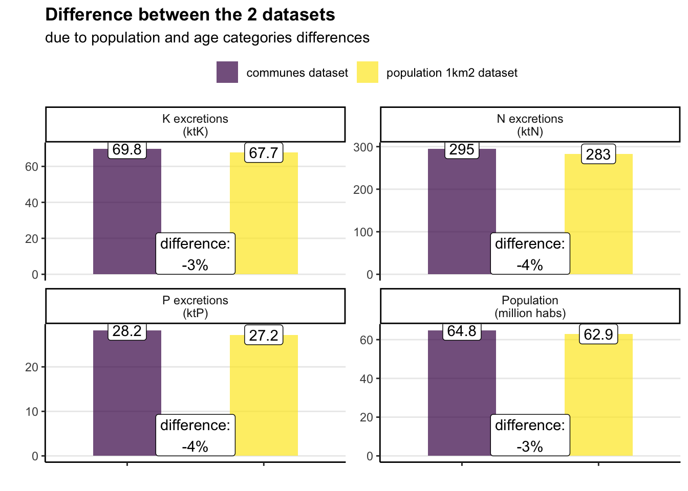
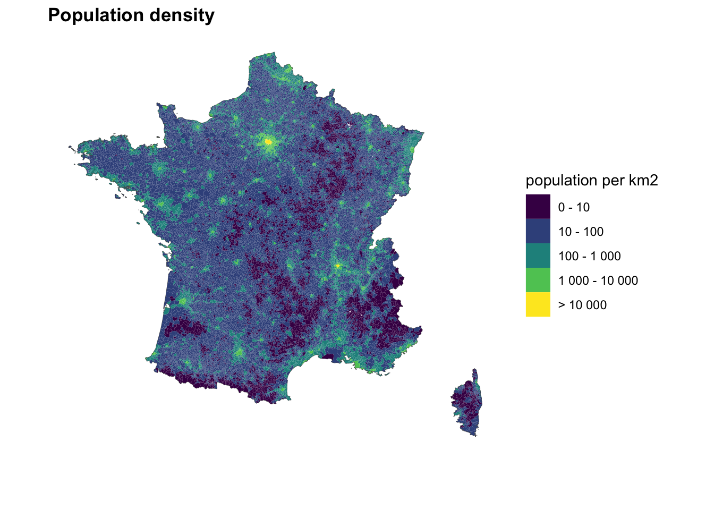

knitr::opts_chunk$set(message=F, warning=F, results=F, fig.align ="center", dev='png')# Load the function file common to all pagessource("functions.R")#included:#-function to save csv f_save_csv_files#-set the default scale_color and scale_fill to viridis theme#-loads the core tidyverse packagelibrary(arrow) #to read and write parquet file, and set objects to arrow tableslibrary(sf)library(cowplot)#set theme for graphstheme_set(theme_classic() +theme(panel.grid.major.y =element_line(), #no vertical lines by default#text = element_text(family = "Times New Roman"), #default fontplot.title =element_text(face="bold"), #graphs titles in bolds ) )CRS_RGF93_Lambert93 <-2154# number of coordinate projection system used for France (Réseau Géodésique Français 1993 - Lambert 93)# molar mass K : 39, O : 16K2O_K_conversion_factor <- (2*39)/(2*39+16)# molar mass P : 31, O : 16P2O5_P_conversion_factor <- (2*31)/(2*31+5*16)
Code
#load map regions and create a whole France polygon from thissf_regions <- sf::st_read("source/maps/all_French_admin_units/ADMIN-EXPRESS-COG_2-1__SHP__FRA_2020-11-20/ADMIN-EXPRESS-COG/1_DONNEES_LIVRAISON_2020-11-20/ADE-COG_2-1_SHP_LAMB93_FR/REGION.shp")sf_france <-st_union(sf_regions)#simplify polygon for faster plottingsf_france <-st_simplify(sf_france, 100, preserveTopology = T)rm(sf_regions)#load map communessf_communes <- sf::st_read("source/maps/all_French_admin_units/ADMIN-EXPRESS-COG_2-1__SHP__FRA_2020-11-20/ADMIN-EXPRESS-COG/1_DONNEES_LIVRAISON_2020-11-20/ADE-COG_2-1_SHP_LAMB93_FR/COMMUNE.shp")#keep columns of interest from sf_communes <- sf_communes %>%select(code_commune = INSEE_COM, name_commune = NOM_COM, code_department = INSEE_DEP, code_region = INSEE_REG,population_sf = POPULATION )#load map old regions and convert it into our Coordinate Reference Systemsf_old_regions <- sf::st_read("/Users/thomasstarck/Desktop/sites/spatial-excretions-fertilization/source/maps/old_regions/regions-20140306-5m.shp")sf_old_regions <-st_transform(sf_old_regions, CRS_RGF93_Lambert93)
I convert the population in each French commune to nutrient excretions. This is obtained by combining population data with data reported in the INCA3 study, that I already investigated in a previous project (see figures in Nutrient intakes by age and sex -> Tables).
Population data by commune and by age comes from INSEE, and its reference year is 2018.
Code
#load filepopulation_communes <- readxl::read_excel("source/population/population_by_commune/pop-sexe-age-quinquennal6818.xls", sheet ="COM_2018",skip=13 )# check factors here https://thomas-starck.github.io/n-p-sanitation-flows/0_nutrient_excretions.html in Nutrient intakes by age and sex -> Tablespopulation_communes <- population_communes %>%mutate(# Nitrogen# MENN_inca_men_0_1 =0.88*ageq_rec01s1rpop2018/5, #0 to 4 years, 1/5N_inca_men_1_3 =2.58*ageq_rec01s1rpop2018*4/5, #0 to 4 years, 4/5N_inca_men_4_6 =3.33*ageq_rec02s1rpop2018*2/5, #5 to 9 years, 2/5N_inca_men_7_10 =4.16*ageq_rec02s1rpop2018*3/5, #5 to 9 years, 3/5N_inca_men_11_14 =4.67*ageq_rec03s1rpop2018, #10 to 14 yearsN_inca_men_15_17 =5.18*ageq_rec04s1rpop2018, #15 to 19 yearsN_inca_men_18_44 =5.48*(ageq_rec05s1rpop2018 + ageq_rec06s1rpop2018 + ageq_rec07s1rpop2018 + ageq_rec08s1rpop2018 + ageq_rec09s1rpop2018), #20 to 44 years, by 5-year categoriesN_inca_men_45_64 =5.62*(ageq_rec10s1rpop2018 + ageq_rec11s1rpop2018 + ageq_rec12s1rpop2018 + ageq_rec13s1rpop2018), #45 to 64 years, by 5-year categoriesN_inca_men_65_79 =5.29*(ageq_rec14s1rpop2018 + ageq_rec15s1rpop2018 + ageq_rec16s1rpop2018 + ageq_rec17s1rpop2018 + ageq_rec18s1rpop2018 + ageq_rec19s1rpop2018 + ageq_rec20s1rpop2018),#45 to >95 years, by 5-year categories# WOMEN, nitrogenN_inca_women_0_1 =0.949*ageq_rec01s2rpop2018/5, #0 to 4 years, 1/5N_inca_women_1_3 =2.51*ageq_rec01s2rpop2018*4/5, #0 to 4 years, 4/5N_inca_women_4_6 =3.18*ageq_rec02s2rpop2018*2/5, #5 to 9 years, 2/5N_inca_women_7_10 =3.76*ageq_rec02s2rpop2018*3/5, #5 to 9 years, 3/5N_inca_women_11_14 =4.09*ageq_rec03s2rpop2018, #10 to 14 yearsN_inca_women_15_17 =3.83*ageq_rec04s2rpop2018, #15 to 19 yearsN_inca_women_18_44 =4.12*(ageq_rec05s2rpop2018 + ageq_rec06s2rpop2018 + ageq_rec07s2rpop2018 + ageq_rec08s2rpop2018 + ageq_rec09s2rpop2018), #20 to 44 years, by 5-year categoriesN_inca_women_45_64 =4.34*(ageq_rec10s2rpop2018 + ageq_rec11s2rpop2018 + ageq_rec12s2rpop2018 + ageq_rec13s2rpop2018), #45 to 64 years, by 5-year categoriesN_inca_women_65_79 =4.05*(ageq_rec14s2rpop2018 + ageq_rec15s2rpop2018 + ageq_rec16s2rpop2018 + ageq_rec17s2rpop2018 + ageq_rec18s2rpop2018 + ageq_rec19s2rpop2018 + ageq_rec20s2rpop2018),#45 to >95 years, by 5-year categories# Phosphorus# MENP_inca_men_0_1 =0.134*ageq_rec01s1rpop2018/5, #0 to 4 years, 1/5P_inca_men_1_3 =0.303*ageq_rec01s1rpop2018*4/5, #0 to 4 years, 4/5P_inca_men_4_6 =0.361*ageq_rec02s1rpop2018*2/5, #5 to 9 years, 2/5P_inca_men_7_10 =0.434*ageq_rec02s1rpop2018*3/5, #5 to 9 years, 3/5P_inca_men_11_14 =0.467*ageq_rec03s1rpop2018, #10 to 14 yearsP_inca_men_15_17 =0.5*ageq_rec04s1rpop2018, #15 to 19 yearsP_inca_men_18_44 =0.515*(ageq_rec05s1rpop2018 + ageq_rec06s1rpop2018 + ageq_rec07s1rpop2018 + ageq_rec08s1rpop2018 + ageq_rec09s1rpop2018), #20 to 44 years, by 5-year categoriesP_inca_men_45_64 =0.518*(ageq_rec10s1rpop2018 + ageq_rec11s1rpop2018 + ageq_rec12s1rpop2018 + ageq_rec13s1rpop2018), #45 to 64 years, by 5-year categoriesP_inca_men_65_79 =0.482*(ageq_rec14s1rpop2018 + ageq_rec15s1rpop2018 + ageq_rec16s1rpop2018 + ageq_rec17s1rpop2018 + ageq_rec18s1rpop2018 + ageq_rec19s1rpop2018 + ageq_rec20s1rpop2018),#45 to >95 years, by 5-year categories# WOMEN, nitrogenP_inca_women_0_1 =0.142*ageq_rec01s2rpop2018/5, #0 to 4 years, 1/5P_inca_women_1_3 =0.296*ageq_rec01s2rpop2018*4/5, #0 to 4 years, 4/5P_inca_women_4_6 =0.346*ageq_rec02s2rpop2018*2/5, #5 to 9 years, 2/5P_inca_women_7_10 =0.387*ageq_rec02s2rpop2018*3/5, #5 to 9 years, 3/5P_inca_women_11_14 =0.412*ageq_rec03s2rpop2018, #10 to 14 yearsP_inca_women_15_17 =0.383*ageq_rec04s2rpop2018, #15 to 19 yearsP_inca_women_18_44 =0.405*(ageq_rec05s2rpop2018 + ageq_rec06s2rpop2018 + ageq_rec07s2rpop2018 + ageq_rec08s2rpop2018 + ageq_rec09s2rpop2018), #20 to 44 years, by 5-year categoriesP_inca_women_45_64 =0.409*(ageq_rec10s2rpop2018 + ageq_rec11s2rpop2018 + ageq_rec12s2rpop2018 + ageq_rec13s2rpop2018), #45 to 64 years, by 5-year categoriesP_inca_women_65_79 =0.376*(ageq_rec14s2rpop2018 + ageq_rec15s2rpop2018 + ageq_rec16s2rpop2018 + ageq_rec17s2rpop2018 + ageq_rec18s2rpop2018 + ageq_rec19s2rpop2018 + ageq_rec20s2rpop2018),#45 to >95 years, by 5-year categories# Potassium# MENK_inca_men_0_1 =0.286*ageq_rec01s1rpop2018/5, #0 to 4 years, 1/5K_inca_men_1_3 =0.675*ageq_rec01s1rpop2018*4/5, #0 to 4 years, 4/5K_inca_men_4_6 =0.803*ageq_rec02s1rpop2018*2/5, #5 to 9 years, 2/5K_inca_men_7_10 =0.964*ageq_rec02s1rpop2018*3/5, #5 to 9 years, 3/5K_inca_men_11_14 =1.03*ageq_rec03s1rpop2018, #10 to 14 yearsK_inca_men_15_17 =1.07*ageq_rec04s1rpop2018, #15 to 19 yearsK_inca_men_18_44 =1.21*(ageq_rec05s1rpop2018 + ageq_rec06s1rpop2018 + ageq_rec07s1rpop2018 + ageq_rec08s1rpop2018 + ageq_rec09s1rpop2018), #20 to 44 years, by 5-year categoriesK_inca_men_45_64 =1.34*(ageq_rec10s1rpop2018 + ageq_rec11s1rpop2018 + ageq_rec12s1rpop2018 + ageq_rec13s1rpop2018), #45 to 64 years, by 5-year categoriesK_inca_men_65_79 =1.27*(ageq_rec14s1rpop2018 + ageq_rec15s1rpop2018 + ageq_rec16s1rpop2018 + ageq_rec17s1rpop2018 + ageq_rec18s1rpop2018 + ageq_rec19s1rpop2018 + ageq_rec20s1rpop2018),#45 to >95 years, by 5-year categories# WOMEN, nitrogenK_inca_women_0_1 =0.315*ageq_rec01s2rpop2018/5, #0 to 4 years, 1/5K_inca_women_1_3 =0.628*ageq_rec01s2rpop2018*4/5, #0 to 4 years, 4/5K_inca_women_4_6 =0.785*ageq_rec02s2rpop2018*2/5, #5 to 9 years, 2/5K_inca_women_7_10 =0.85*ageq_rec02s2rpop2018*3/5, #5 to 9 years, 3/5K_inca_women_11_14 =0.92*ageq_rec03s2rpop2018, #10 to 14 yearsK_inca_women_15_17 =0.876*ageq_rec04s2rpop2018, #15 to 19 yearsK_inca_women_18_44 =0.986*(ageq_rec05s2rpop2018 + ageq_rec06s2rpop2018 + ageq_rec07s2rpop2018 + ageq_rec08s2rpop2018 + ageq_rec09s2rpop2018), #20 to 44 years, by 5-year categoriesK_inca_women_45_64 =1.09*(ageq_rec10s2rpop2018 + ageq_rec11s2rpop2018 + ageq_rec12s2rpop2018 + ageq_rec13s2rpop2018), #45 to 64 years, by 5-year categoriesK_inca_women_65_79 =1.04*(ageq_rec14s2rpop2018 + ageq_rec15s2rpop2018 + ageq_rec16s2rpop2018 + ageq_rec17s2rpop2018 + ageq_rec18s2rpop2018 + ageq_rec19s2rpop2018 + ageq_rec20s2rpop2018),#45 to >95 years, by 5-year categories# Add all ages categories# populationpopulation =#men ageq_rec01s1rpop2018 + ageq_rec02s1rpop2018 + ageq_rec03s1rpop2018 + ageq_rec04s1rpop2018 + ageq_rec05s1rpop2018 + ageq_rec06s1rpop2018 + ageq_rec07s1rpop2018 + ageq_rec08s1rpop2018 + ageq_rec09s1rpop2018 + ageq_rec10s1rpop2018 + ageq_rec11s1rpop2018 + ageq_rec12s1rpop2018 + ageq_rec13s1rpop2018 + ageq_rec14s1rpop2018 + ageq_rec15s1rpop2018 + ageq_rec16s1rpop2018 + ageq_rec17s1rpop2018 + ageq_rec18s1rpop2018 + ageq_rec19s1rpop2018 + ageq_rec20s1rpop2018 +#women ageq_rec01s2rpop2018 + ageq_rec02s2rpop2018 + ageq_rec03s2rpop2018 + ageq_rec04s2rpop2018 + ageq_rec05s2rpop2018 + ageq_rec06s2rpop2018 + ageq_rec07s2rpop2018 + ageq_rec08s2rpop2018 + ageq_rec09s2rpop2018 + ageq_rec10s2rpop2018 + ageq_rec11s2rpop2018 + ageq_rec12s2rpop2018 + ageq_rec13s2rpop2018 + ageq_rec14s2rpop2018 + ageq_rec15s2rpop2018 + ageq_rec16s2rpop2018 + ageq_rec17s2rpop2018 + ageq_rec18s2rpop2018 + ageq_rec19s2rpop2018 + ageq_rec20s2rpop2018,# nitrogenkgN_excretions =#men N_inca_men_0_1 + N_inca_men_1_3 + N_inca_men_4_6 + N_inca_men_7_10 + N_inca_men_11_14 + N_inca_men_15_17 + N_inca_men_18_44 + N_inca_men_45_64 + N_inca_men_65_79 +#women N_inca_women_0_1 + N_inca_women_1_3 + N_inca_women_4_6 + N_inca_women_7_10 + N_inca_women_11_14 + N_inca_women_15_17 + N_inca_women_18_44 + N_inca_women_45_64 + N_inca_women_65_79,# phosphoruskgP_excretions =#men P_inca_men_0_1 + P_inca_men_1_3 + P_inca_men_4_6 + P_inca_men_7_10 + P_inca_men_11_14 + P_inca_men_15_17 + P_inca_men_18_44 + P_inca_men_45_64 + P_inca_men_65_79 +#women P_inca_women_0_1 + P_inca_women_1_3 + P_inca_women_4_6 + P_inca_women_7_10 + P_inca_women_11_14 + P_inca_women_15_17 + P_inca_women_18_44 + P_inca_women_45_64 + P_inca_women_65_79,# potassiumkgK_excretions =#men K_inca_men_0_1 + K_inca_men_1_3 + K_inca_men_4_6 + K_inca_men_7_10 + K_inca_men_11_14 + K_inca_men_15_17 + K_inca_men_18_44 + K_inca_men_45_64 + K_inca_men_65_79 +#women K_inca_women_0_1 + K_inca_women_1_3 + K_inca_women_4_6 + K_inca_women_7_10 + K_inca_women_11_14 + K_inca_women_15_17 + K_inca_women_18_44 + K_inca_women_45_64 + K_inca_women_65_79,# and finally create code commune based on department and commune codescode_commune =paste0(DR, CR) ) %>%select(code_region = RR, code_department = DR, code_commune, name_commune = LIBELLE, population, kgN_excretions, kgP_excretions, kgK_excretions )
The 20 Parisian arrondissements are merged into 1 commune, and overseas territories are removed.
Code
#have to merge Paris arrondissements in 1 unique commune#first we merge the arrondissements in one temporary file. 75056 is the code for Paris in the map filetemp <- population_communes %>%filter( code_commune %in%c("75101", "75102", "75103", "75104", "75105", "75106", "75107", "75108", "75109", "75110","75111", "75112", "75113", "75114", "75115", "75116", "75117", "75118", "75119", "75120")) %>%mutate(code_commune ="75056", name_commune ="Paris") %>%group_by(code_region, code_department, code_commune, name_commune) %>%summarise(population =sum(population, na.rm = T),kgN_excretions =sum(kgN_excretions, na.rm = T),kgP_excretions =sum(kgP_excretions, na.rm = T),kgK_excretions =sum(kgK_excretions, na.rm = T) )#then we remove arrondissements from the main filepopulation_communes <- population_communes %>%filter(!code_commune %in%c("75101", "75102", "75103", "75104", "75105", "75106", "75107", "75108", "75109", "75110","75111", "75112", "75113", "75114", "75115", "75116", "75117", "75118", "75119", "75120"))#finally we merge the two filespopulation_communes <-bind_rows(population_communes, temp)rm(temp)#we remove overseas territoriespopulation_communes <- population_communes %>%filter(!code_department %in%c("971", "972", "973", "974"))official_pop <-sum(population_communes$population, na.rm=T)/10^6# 64.8 Mhabofficial_N_excr <-sum(population_communes$kgN_excretions, na.rm=T)/10^6# 294 ktNofficial_P_excr <-sum(population_communes$kgP_excretions, na.rm=T)/10^6# 28.2 ktPofficial_K_excr <-sum(population_communes$kgK_excretions, na.rm=T)/10^6# 69.8 ktKN_excrec_per_cap <- official_N_excr/official_pop # 4.54 kgN/capP_excrec_per_cap <- official_P_excr/official_pop # 0.44 kgP/capK_excrec_per_cap <- official_K_excr/official_pop # 1.08 kgK/cap
I add communes spatial polygons from Géoservices Admin Express shapefile data (link) to INSEE communes data.
Code
#all communes in sf_communes are in population_communes (unpaired is empty)unpaired <-anti_join(sf_communes, population_communes, by="code_commune")#check communes in population_communes not present in sf_communes: 3244 communes concerned, but they all report 0 inhabitants, so no consequenceunpaired <-anti_join(population_communes, sf_communes, by="code_commune")nrow(unpaired) #3244 communessum(unpaired$population, na.rm=T) #0 habrm(unpaired)#so we chose to perform an inner join (to not keep these communes with 0 inhabitants)population_communes <-inner_join( population_communes, sf_communes %>%#remove columns already in population_communesselect(-c(name_commune, code_department, code_region)), by="code_commune" ) # uncomment to check coherence between the 2 datasets communes population# ggplot(population_communes) +# geom_point(aes(population_sf, population)) +# scale_x_log10() + scale_y_log10()# INSEE and shapefile population data are very similarsum(population_communes$population, na.rm=T)/10^6#64.8 in the INSEE data by agesum(sf_communes$population_sf, na.rm=T)/10^6#64.6 in the shapefile #we only keep the official INSEE popultion datapopulation_communes <- population_communes %>%select(-population_sf)#compute communes area based on polygonpopulation_communes <- population_communes %>%mutate(area_m2 =st_area(geometry),area_commune_ha =as.numeric(area_m2/10000),area_commune_km2 =as.numeric(area_commune_ha/100) ) %>%select(-area_m2)
Population at the 1 km2 resolution (source of the dataset from INSEE).
Once again I adapt the population data by age to convert it to nutrient excretions.
There are small discrepancies with the commune datasets regarding the resulting excretions (see the Comparison tab). This is mostly because the 1 km2 dataset reports a slightly smaller population. The different age distribution in the 1 km2 compared to the communes dataset almost does not influence the result (code chunk below).
Code
# detailed ages resultssum(population_1km2_ages$population)/10^6# 62.9 Mhabsum(population_1km2_ages$kgN_excretions)/10^6# 283.5 ktN (instead of 297)sum(population_1km2_ages$kgP_excretions)/10^6# 27.2 ktP (instead of 28.4)sum(population_1km2_ages$kgK_excretions)/10^6# 67.6 ktK (instead of 70)sum(population_1km2_ages$kgN_excretions)/sum(population_1km2_ages$population) # gives mean 4.5 kgN/cap.yearsum(population_1km2_ages$kgP_excretions)/sum(population_1km2_ages$population) # gives mean 0.43 kgP/cap.yearsum(population_1km2_ages$kgK_excretions)/sum(population_1km2_ages$population) # gives mean 1.07 kgK/cap.year# no ages resultssum(population_1km2_no_ages$population)/10^6# 62.9 Mhabsum(population_1km2_no_ages$kgN_excretions)/10^6#286 ktN (based on hypothesis 4.6 kgN/cap/year)sum(population_1km2_no_ages$kgP_excretions)/10^6#27.4 ktP (based on hypothesis 0.44 kgN/cap/year)sum(population_1km2_no_ages$kgK_excretions)/10^6#67.7 ktK (based on hypothesis 1.08 kgN/cap/year)population_1km2 <- population_1km2_agesrm(population_1km2_ages, population_1km2_no_ages)
Code
data.table::setDT(population_1km2) #data.table for fast summarizing on large datadata.table::setDT(population_communes) #summarize population and excretions at national scale, for communes datasetsummary_communes <- population_communes %>%select(population, kgN_excretions, kgP_excretions, kgK_excretions) %>%summarise(`Population\n(million habs)`=round(sum(population, na.rm=T)/10^6, 1),`N excretions\n(ktN)`=round(sum(kgN_excretions, na.rm=T)/10^6, 0),`P excretions\n(ktP)`=round(sum(kgP_excretions, na.rm=T)/10^6, 1),`K excretions\n(ktK)`=round(sum(kgK_excretions, na.rm=T)/10^6, 1) ) %>%mutate(source ="communes dataset" )#summarize population and excretions at national scale, for 1 km2 datasetsummary_1km2 <- population_1km2 %>%select(population, kgN_excretions, kgP_excretions, kgK_excretions) %>%summarise(`Population\n(million habs)`=round(sum(population, na.rm=T)/10^6, 1),`N excretions\n(ktN)`=round(sum(kgN_excretions, na.rm=T)/10^6, 0),`P excretions\n(ktP)`=round(sum(kgP_excretions, na.rm=T)/10^6, 1),`K excretions\n(ktK)`=round(sum(kgK_excretions, na.rm=T)/10^6, 1) ) %>%mutate(source ="population 1km2 dataset" )#create datasets of the 2 summaries, for graphdf_comparison <-bind_rows(summary_communes, summary_1km2) %>%gather(variable, value, -source)temp <- df_comparison %>%spread(source, value) %>%mutate(percentage_difference =round((`population 1km2 dataset`-`communes dataset`)/`communes dataset`*100) )#plot graph of comparisonsggplot(df_comparison) +geom_col(aes(source, value, fill=source), position ="dodge", alpha=.7, width =0.5 ) +geom_label(aes(source, value, label=value), position ="dodge" ) +geom_label(data = temp,aes(1.5, 0, label=paste0("difference:\n", percentage_difference, "%")), vjust=0 ) +facet_wrap(vars(variable), scales="free_y" ) +theme(axis.text.x =element_blank(),legend.position ="top" ) +labs(x="", y="", fill="",title ="Difference between the 2 datasets",subtitle ="due to population and age categories differences" )

Code
#remove temporary files used for graphrm(temp, df_comparison, summary_communes, summary_1km2)
Code
# resolution of raster pixelsresolution_meters <-2000km2_resolution <- (resolution_meters/10^3)^2ha_resolution <- km2_resolution*100
Code
population_1km2 <-st_as_sf(population_1km2)#prepare rasterpopulation_4km2 <-f_prepare_raster( population_1km2 %>%mutate(kgNorg =0, area_ha =100), #have to fill Norg and area variables for function f_prepare_raster area_ha, kgN_excretions, kgP_excretions, kgK_excretions, kgNorg, resolution_meters, sf_france )#rm(population_1km2)
join raster data with communes description = 1 km2
Code
population_1km2 <-st_as_sf(population_1km2, coords =c("x", "y"), crs = CRS_RGF93_Lambert93) %>%#remove pixels with no populationfilter(is.na(population)==F)#to save coordinates in 2 columns later (points geometry dropped in the following join)population_1km2 <- population_1km2 %>%mutate(y =st_coordinates(geometry)[, "Y"],x =st_coordinates(geometry)[, "X"] )#attribute each point of population_1km2 to a polygon commune of sf_communes#st_join(population_1km2, temp_anonym, join = st_within) would be conceptually more correct, but is way slower#first, dropping the points not within a commune polygon, to see the % of lossesjoin_dropping_unattributed_points <-st_join(sf_communes, population_1km2, join = st_intersects)# 0.4% of pixels not attributed to a commune(nrow(population_1km2)-nrow(join_dropping_unattributed_points))/nrow(population_1km2)*100#correspond to 0.4% of the original population in the population_1km2 file(sum(population_1km2$population, na.rm=T)-sum(join_dropping_unattributed_points$population, na.rm=T))/sum(population_1km2$population, na.rm=T)*100#now real join, keeping the pixels with unattributed communespopulation_1km2 <-st_join(population_1km2, sf_communes, join = st_intersects)rm(join_dropping_unattributed_points)#add old regions with spatial joinpopulation_1km2 <-st_join(population_1km2, sf_old_regions %>%select(code_old_region = code_insee), join = st_intersects)#remove data communes present in sf not attributed to pixels (based on in existent lat and long)population_1km2 <- population_1km2 %>%filter(is.na(x)==F &is.na(y)==F)#the join removed pixels points and added communes polygons: recompute points and remove polygonspopulation_1km2 <- population_1km2 %>%st_drop_geometry()# population_1km2 <- st_as_sf(population_1km2, coords = c("lon_RGF93_LAMB_93", "lat_RGF93_LAMB_93"), crs = CRS_RGF93_Lambert93) # population_1km2 <- population_1km2 %>%# mutate(# lat_RGF93_LAMB_93 = st_coordinates(geometry)[, "Y"],# lon_RGF93_LAMB_93 := st_coordinates(geometry)[, "X"]# )#add region and old region namestemp <-read_csv("source/regions_data/regions_keys.csv", col_types =cols("c", "c", "c", "c"))#add region name based on code_region population_1km2 <- population_1km2 %>%left_join(temp %>%select(code_region, name_region) %>%distinct(), by="code_region")#add old region name based on code_old_regionpopulation_1km2 <- population_1km2 %>%left_join(temp %>%select(code_old_region, name_old_region), by="code_old_region")rm(temp)
join raster data with communes description = 4 km2
Code
population_4km2 <-st_as_sf(population_4km2, coords =c("x", "y"), crs = CRS_RGF93_Lambert93) %>%#remove pixels with no populationfilter(is.na(population)==F)#to save coordinates in 2 columns later (points geometry dropped in the following join)population_4km2 <- population_4km2 %>%mutate(y =st_coordinates(geometry)[, "Y"],x =st_coordinates(geometry)[, "X"] )#attribute each point of population_1km2 to a polygon commune of sf_communes#st_join(population_1km2, temp_anonym, join = st_within) would be conceptually more correct, but is way slower#first, dropping the points not within a commune polygon, to see the % of lossesjoin_dropping_unattributed_points <-st_join(sf_communes, population_4km2, join = st_intersects)# 0.4% of pixels not attributed to a commune(nrow(population_4km2)-nrow(join_dropping_unattributed_points))/nrow(population_4km2)*100#correspond to 1% of the original population in the population_4km2 file(sum(population_4km2$population, na.rm=T)-sum(join_dropping_unattributed_points$population, na.rm=T))/sum(population_4km2$population, na.rm=T)*100#now real join, keeping the pixels with unattributed communespopulation_4km2 <-st_join(population_4km2, sf_communes, join = st_intersects)rm(join_dropping_unattributed_points)#add old regions with spatial joinpopulation_4km2 <-st_join(population_4km2, sf_old_regions %>%select(code_old_region = code_insee), join = st_intersects)#remove data communes present in sf not attributed to pixels (based on in existent lat and long)population_4km2 <- population_4km2 %>%filter(is.na(x)==F &is.na(y)==F)#the join removed pixels points and added communes polygons: recompute points and remove polygonspopulation_4km2 <- population_4km2 %>%st_drop_geometry()# population_4km2 <- st_as_sf(population_4km2, coords = c("lon_RGF93_LAMB_93", "lat_RGF93_LAMB_93"), crs = CRS_RGF93_Lambert93) # population_4km2 <- population_4km2 %>%# mutate(# lat_RGF93_LAMB_93 = st_coordinates(geometry)[, "Y"],# lon_RGF93_LAMB_93 := st_coordinates(geometry)[, "X"]# )#add region and old region namestemp <-read_csv("source/regions_data/regions_keys.csv", col_types =cols("c", "c", "c", "c"))#add region name based on code_region population_4km2 <- population_4km2 %>%left_join(temp %>%select(code_region, name_region) %>%distinct(), by="code_region")#add old region name based on code_old_regionpopulation_4km2 <- population_4km2 %>%left_join(temp %>%select(code_old_region, name_old_region), by="code_old_region")rm(temp)
Code
#transform for variable per our resolution (here 4 km2) to variable per km2population_4km2 <- population_4km2 %>%mutate(#populationpop_per_km2 = population/km2_resolution,pop_commune_per_ha = pop_per_km2/100, ) %>%filter(is.na(pop_per_km2)==F )
Code
#transform for variable per our resolution (here 1 km2) to variable per km2population_1km2 <- population_1km2 %>%mutate(#populationpop_per_km2 = population,pop_commune_per_ha = pop_per_km2/100, ) %>%filter(is.na(pop_per_km2)==F )
Code
population_communes <- population_communes %>%mutate(#populationpop_commune_per_km2 = population/area_commune_km2,pop_commune_per_ha = pop_commune_per_km2/100,#tN/km2 and kgN/hakgN_excretions_per_ha = kgN_excretions/area_commune_ha,tN_excretions_per_km2 = kgN_excretions_per_ha/1000*100,#tP/km2 and kgP/hakgP_excretions_per_ha = kgP_excretions/area_commune_ha,tP_excretions_per_km2 = kgP_excretions_per_ha/1000*100,#tK/km2 and kgK/hakgK_excretions_per_ha = kgK_excretions/area_commune_ha,tK_excretions_per_km2 = kgK_excretions_per_ha/1000*100 ) %>%filter(is.na(pop_commune_per_km2)==F )population_communes <-st_as_sf(population_communes)
save data
Code
# COMMUNES DATASET#save a file without commune polygon but just its x and y coordinates, to simplifytemp <- population_communestemp$geometry <-st_centroid(temp$geometry)#add old regions with a spatial join on communes coordinatestemp <-st_join(temp, sf_old_regions %>%select(code_old_region = code_insee), join = st_intersects)#add region and old region namestemp_keys_regions <-read_csv("source/regions_data/regions_keys.csv", col_types =cols("c", "c", "c", "c"))#add region name based on code_region temp <- temp %>%left_join(temp_keys_regions %>%select(code_region, name_region) %>%distinct(), by="code_region")#add old region name based on code_old_regiontemp <- temp %>%left_join(temp_keys_regions %>%select(code_old_region, name_old_region), by="code_old_region")rm(temp_keys_regions)#explicit name of projection and coordinate system for x and ytemp <- temp %>%mutate(lat_RGF93_LAMB_93_excr =st_coordinates(geometry)[, "Y"],lon_RGF93_LAMB_93_excr :=st_coordinates(geometry)[, "X"] ) %>%#explicitly say it concerns excretionsrename(code_region_excr = code_region,name_region_excr = name_region,code_department_excr = code_department,code_commune_excr = code_commune,name_commune_excr = name_commune,code_old_region_excr = code_old_region,name_old_region_excr = name_old_region, ) %>%st_drop_geometry()f_save_csv_files( temp, "output/excretions/","excretions_by_communes.csv")# RASTER 4 KM2 DATASETtemp <- population_4km2 %>%rename(lat_RGF93_LAMB_93_excr = y,lon_RGF93_LAMB_93_excr = x,cell_ID = ID ) %>%#explicitly say it concerns excretionsrename(code_region_excr = code_region,name_region_excr = name_region,code_department_excr = code_department,code_commune_excr = code_commune,name_commune_excr = name_commune,code_old_region_excr = code_old_region,name_old_region_excr = name_old_region, )f_save_csv_files( temp, "output/excretions/","excretions_by_4km2.csv")f_save_parquet_files( temp, "output/excretions/","excretions_by_4km2.parquet")#sum(temp$population)# RASTER 1 KM2 DATASETtemp <- population_1km2 %>%#create a unique IDmutate(ID =row_number()) %>%rename(lat_RGF93_LAMB_93_excr = y,lon_RGF93_LAMB_93_excr = x,cell_ID = ID ) %>%#explicitly say it concerns excretionsrename(code_region_excr = code_region,name_region_excr = name_region,code_department_excr = code_department,code_commune_excr = code_commune,name_commune_excr = name_commune,code_old_region_excr = code_old_region,name_old_region_excr = name_old_region, )f_save_csv_files( temp, "output/excretions/","excretions_by_1km2.csv")f_save_parquet_files( temp, "output/excretions/","excretions_by_1km2.parquet")#sum(temp$population)#remove temporary old region filerm(sf_old_regions)
f_graph_communes("Population density", "population per km2")

Code
f_graph_distribution(population_4km2, pop_per_km2, "population") +scale_x_log10(labels = scales::label_number(drop0trailing =TRUE)) +labs(x="mean population density (hab/km2)\non the 4 km2 pixel")